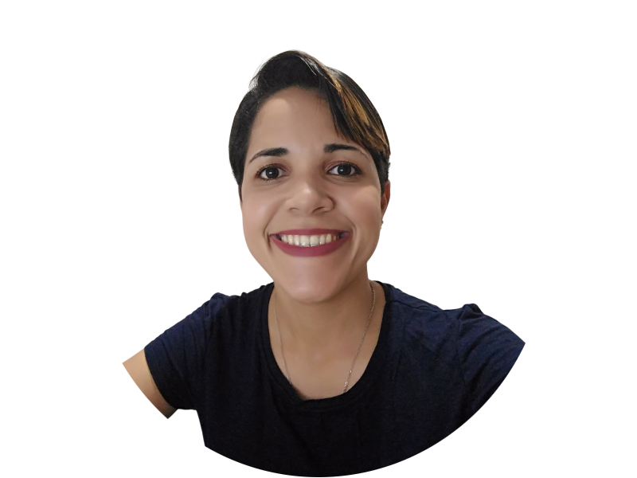

Formação
- Ensino superior em andamento, cursando Análise e Densevolvimento de Sistemas na Uninter, início do curso em Abril de 2024.
- Concluí o curso de programação da Devmedia - com duração de 1 ano,entre junho de 2023 e junho de 2024 - que envolvia as trilhas de carreira front-end e back-end. No qual foram abordados conceitos e projetos envolvendo tecnologias como: HTML, CSS, JavaScript, React, Node.js, API REST
- Conhecimento básico em: Python, SQL, Git e Github
- Em setembro de 2019 iniciei meus estudos em programação no curso técnico de Desenvolvimento de Sistemas e concluí em agosto de 2021. Porém, por questões pessoais, acabei migrando para outros objetivos, até que depois de certo tempo, cheguei a conclusão de que era na programação aonde tinha me encontrado e que valia a pena me empenhar por essa carreira.